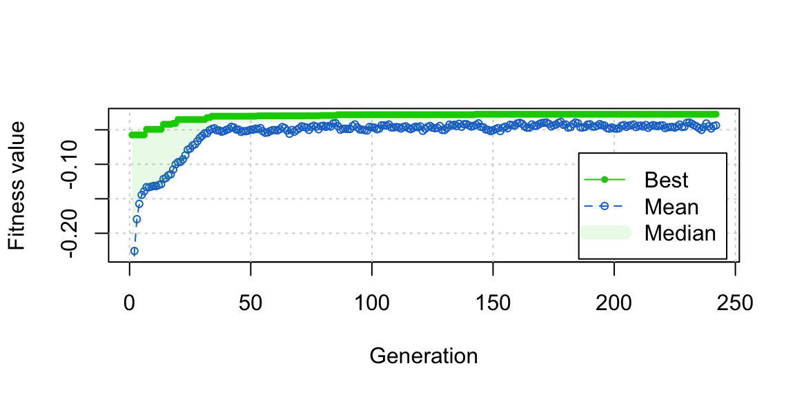

data("lalonde", package = "MatchIt")
covs <- lalonde |> subset(select = c(age, educ, married,
race, nodegree,
re74, re75))
treat <- lalonde$treatGenetic Matching, from the Ground Up
matching
R
Genetic matching sounds cool and science-y, something we social scientists love because nobody thinks what we do is “real” science. And genetic matching is cool and science-y, but not because it has anything to do with genes or DNA. Genetic matching is a method of adjusting for confounding in observational studies; it is a close relative of propensity score matching and Mahalanobis distance matching and serves exactly the same purpose. Sekhon (2011) and Diamond and Sekhon (2013) describe genetic matching, but I’ll explain it here in simple terms and with an emphasis on its generality, which is undersold by its implementations.
This post won’t make any sense if you don’t know what matching in general is. Go read Stuart (2010), Greifer and Stuart (2021), and the MatchIt vignette on matching methods to learn about them. The focus here will be on pair matching, which involves assigning units to pairs or strata based on the distances between them, then discarding unpaired units.
The goal of matching is balanced samples, i.e., samples where the distribution of covariates in the treated and control groups is the same so that an estimated treatment effect cannot be said to be due to differences in the covariate distributions. Why, then, do we make pairs? Close pairs create balance, in theory. How do we compute how close units are to each other? There are several ways; a common one is the Mahalanobis distance, as described for matching in Rubin (1980), and which I’ll describe here.
The Mahalanobis distance between two units \(i\) and \(j\) is defined as
\[ \delta^{md}_{i,j}=\sqrt{(\mathbf{x}_i-\mathbf{x}_j)\Sigma^{-1}(\mathbf{x}_i-\mathbf{x}_j)'} \]
where \(\mathbf{x}_i\) is the vector of covariates for unit \(i\) (i.e., that unit’s row in the dataset) and \(\Sigma\) is the covariance matrix of the covariates1. Equivalently, the Mahalanobis distance is the Euclidean distance (i.e., the regular distance) computed on the standardized principal components. The Mahalanobis distance is an improvement over the Euclidean distance of the covariates because it standardizes the covariates to be on the same scale and adjusts for correlations between covariates (so two highly correlated variables only count once). A great description of the Mahalanobis distance is here (though there it is not described in the context of matching).
Genetic matching concerns a generalization of the Mahalanobis distance, called the generalized Mahalanobis distance, which additionally involves a weight matrix. The generalized Mahalanobis distance is defined as
\[ \delta^{gmd}_{i,j}(W)=\sqrt{(\mathbf{x}_i-\mathbf{x}_j)'\left(\Sigma^{-\frac{1}{2}}\right)' W\Sigma^{-\frac{1}{2}}(\mathbf{x}_i-\mathbf{x}_j)} \]
where \(\Sigma^{-\frac{1}{2}}\) is the “square root” of the inverse of the covariance matrix (e.g., the Cholesky decomposition), and \(W\) is a symmetric weight matrix that can contain anything but in most cases is a diagonal matrix with a scalar weight for each covariate in \(\mathbf{x}\) (not weights for each unit like in propensity score weighting; a weight for each covariate), i.e., \(W = \text{diag}(\begin{bmatrix} w_1 & \dots & w_p \end{bmatrix})\). The generalized Mahalanobis distance is equal to the usual Mahalanobis distance when \(W=I\), the identity matrix.
What does any of this have to do with genetic matching? Well, “genetic matching” is a bit of a misnomer; it’s not a matching method. It’s a method of estimating \(W\). Genetic matching finds the \(W\) that, when incorporated in a generalized Mahalanobis distance used to match treated and control units, yields the best balance. Once you have found \(W\), you then do a regular round of matching, and that is your matched sample.
To put it slightly more formally, consider a function \(\text{match}(\delta)\), which takes in a distance matrix \(\delta\) and produces a matched set of treated and control units, characterized by a set of matching weights (e.g., 1 if matched, 0 if unmatched) and pair membership for each unit. Consider a function \(\text{imbalance}(m)\), which takes in the output of a \(\text{match}(\delta)\) and returns a scalar imbalance metric (e.g., the largest absolute standardized mean difference among all the covariates). We can then write the genetic matching problem as the following:
\[ \underset{W}{\operatorname{arg\,min}} \, \text{imbalance}(\text{match}(\delta^{gmd}(W))) \]
Genetic matching is very general; there are many ways to do the matching (i.e., many ways to specify the \(\text{match}()\) function) and many ways to characterize imbalance (i.e., many ways to specify the \(\text{imbalance}()\) function) (and even several ways to specific \(\delta()\)!). Although nearest neighbor matching is often used for \(\text{match}()\), any matching method that uses a distance matrix could be as well. A specific imbalance measure (which I’ll explain in more detail later) is most often used for \(\text{imbalance}()\) because it is the default in the software that implements genetic matching, but any imbalance measure could be used, and there has been research that indicates that alternative measures may work better.
You may be wondering where the “genetic” part of “genetic matching” comes in. “Genetic” comes from the name of the optimization algorithm that is used to solve the genetic matching problem stated above, which is just called the genetic algorithm. In principle, though, any optimization routine could be used; the genetic algorithm was chosen specifically because it deals well with nonsmooth surfaces, which the objective function above surely is. But other optimization methods that do not rely on derivatives do as well, such as “particle swarm optimization” (we’re really doing science here). I don’t really understand these methods deeply, but we don’t have to to understand what genetic matching is doing2. In order to understand how to tune the algorithm, though, there are some bits worth knowing about, which I’ll briefly cover in the Implementation section below.
Implementation
Genetic matching is implemented in the Matching package in R, which performs genetic matching to estimate \(W\), performs nearest neighbor matching using \(\delta^{gmd}(W)\) or another distance matrix, and then estimates the treatment effect3. The GenMatch() function estimates \(W\), and the Match() function does the matching on the resulting output4. Genetic matching is also available in MatchIt by setting method = "genetic" in the call to matchit(), but it just calls GenMatch() and Match() from Matching.
GenMatch() relies on rgenoud::genoud(), one implementation of the genetic algorithm in R. There are a few tuning parameters worth understanding to use genetic matching to its full potential. The most important one is the population size (i.e., the number of candidates in each generation of the genetic algorithm), controlled by the pop.size argument. All you need to know is that high values are better and slower. Another one perhaps worth knowing about is the number of generations that have to pass with no improvement in the objective function before the algorithm halts and returns the best candidate it has found, controlled by the wait.generations argument. Here, too, higher values are better and slower.
A detail I haven’t emphasized is that the matching method used to to produce the final matched sample using the estimated \(W\) should be the same one used in estimating \(W\), because the estimated \(W\) are tailored to that matching method (i.e., they only optimize balance when supplied to that \(\text{match}()\) function)5. The matching methods available in Matching are nearest neighbor matching with or without replacement, with or without calipers or exact matching constraints, and with \(1:1\) or \(k:1\) matching. This is a pretty broad set of matching options, though it is not complete (e.g., optimal and full matching are not available). One thing about genetic matching is that it is slow, so using a fast matching method is useful for not spending forever to get your matches. Matching uses a fast implementation of nearest neighbor matching programmed in C, which makes it fairly fast, though still quite slow for even moderately sized problems.
The Imbalance Measure
The imbalance measure used in genetic matching is critical to its success as a method. Seeking balance using a poor metric means the resulting matched sample will not be able to reduce bias well, even if the optimal values of \(W\) that minimize that imbalance measure have been found. One challenge is that there is no clear best imbalance measure to use. Ideally, it should incorporate balance on all covariates, and not just on their means but on their full distributions, and not just the marginal distributions but the joint distributions. The best imbalance measure depends heavily on the true outcome-generating model, which is inherently unknowable (otherwise we wouldn’t be doing matching in the first place), though there has been some research into it.
By default, the imbalance measure GenMatch() uses is the smallest p-value among the sets of two-sample t-tests and Kolmogorov-Smirnov (KS) tests for each covariate. This is a bit of a strange imbalance measure that doesn’t really show up anywhere else in the literature. Diamond and Sekhon (2013) justify the use of p-values (which are typically disregarded as methods to assess balance) by arguing that here they are simply used to put the mean differences and KS statistic on a uniform scale rather than to be interpreted as p-values to be used in a hypothesis test. However, there has been research into other balance criteria that might perform better. Oyenubi and Wittenberg (2020) find that the largest value of a univariate balance measure called the “entropic distance”, which is a relative of the KS statistic, performs well as an imbalance measure. Zhu et al. (2018) find that a multivariate imbalance measure called the “kernel distance” does well; this measure takes into account the full, joint covariate distribution, unlike the other methods which do not consider the joint distribution, explaining its effectiveness. I am partial to the energy distance (Rizzo and Székely 2016; Huling and Mak 2024), which is demonstrated to have nice properties and is easy to explain and calculate. Simple balance measures can be effective as well, though; Oyenubi and Wittenberg (2020) and Stuart et al. (2013) find that standardized mean differences can be effective in assessing balance, even though they only take into account the covariate means and do not consider the joint distribution of the covariates.
The Covariates
The generalized Mahalanobis distance depends on \(\mathbf{x}\)–the covariates, \(\Sigma\)–the “scaling” matrix (usually the covariance matrix), and \(W\)–the weights matrix. These, of course, can all be specified in a variety of ways. \(\mathbf{x}\) should contain the covariates one would like balance on, though in principle it doesn’t have to, as long as those covariates are included in the imbalance measure. For example, one might only include 3 of the most important covariates in the calculation of the distance and weights, but optimize balance on all 10 covariates included in the analysis. Diamond and Sekhon (2013) recommend including the propensity score in \(\mathbf{x}\), as close pairs on the propensity score tends to yield well-balanced samples (which is the motivation behind propensity score matching in the first place). On the other hand, King and Nielsen (2019) recommend against including the propensity score if balance can be achieved without it.
Examples
Below are some examples of genetic matching. First we’ll use Matching, which gives us a bit more insight into how the process goes, and then we’ll perform the same analysis using MatchIt to demonstrate how much easier it is. We’ll use the lalonde dataset in MatchIt for this analysis6.
Using Matching
We have a factor variable (race) among our covariates, so we need to turn it into a set of dummy variables for Matching . The cobalt function splitfactor() makes this easy.
covs <- covs |> cobalt::splitfactor(drop.first = FALSE)
head(covs) age educ married race_black race_hispan race_white nodegree re74 re75
NSW1 37 11 1 1 0 0 1 0 0
NSW2 22 9 0 0 1 0 1 0 0
NSW3 30 12 0 1 0 0 0 0 0
NSW4 27 11 0 1 0 0 1 0 0
NSW5 33 8 0 1 0 0 1 0 0
NSW6 22 9 0 1 0 0 1 0 0We’ll estimate a propensity score to include among the covariates, as recommended by Diamond and Sekhon (2013).
## Logistic regression PS
ps <- glm(treat ~ age + educ + married + race +
nodegree + re74 + re75, data = lalonde,
family = binomial) |>
fitted()
## Append the PS to the covariates
covs_ps <- cbind(ps, covs)Okay, now we’re finally ready to use functions in Matching to perform genetic matching. The first step is to use GenMatch() to compute \(W\), and after that we will use Match() to perform the matching using the GenMatch() output. To use GenMatch(), we have to know what kind of matching we eventually want to do. In this example, we’ll do 2:1 matching with replacement for the ATT. Matching has a few extra quirks that need to be addressed to make the matching work as intended, which I’ll include in the code below without much explanation (since my recommendation is to use MatchIt anyway, which takes care of these automatically).
library(Matching)
# Set seed for reproducibility; genetic matching has a random
# component
set.seed(333)
Gen_out <- GenMatch(
Tr = treat, #Treatment
X = covs_ps, #Covariates to match on
BalanceMatrix = covs, #Covariance to balance
estimand = "ATT", #Estimand
M = 2, #2:1 matching
replace = TRUE, #With replacement
ties = FALSE, #No ties
distance.tolerance = 0, #Use precise values
print.level = 0, #Don't print output
pop.size = 200 #Genetic population size; bigger is better
)The important part of the GenMatch() output is the Weight.matrix, which corresponds to \(W\). It’s not really worth interpreting the weights; they are just whatever values happened to yield the best balance and don’t actually tell you anything about how important any covariate is to the treatment. We can supply the weights to the Match() function to do a final round of matching. All the arguments related to matching (e.g., estimand, M, replace, etc.) should be the same between GenMatch() and Match(). We call Match() below.
Match_out <- Match(
Tr = treat, #Treatment
X = covs_ps, #Covariates to match on
estimand = "ATT", #Estimand
M = 2, #2:1 matching
replace = TRUE, #With replacement
ties = FALSE, #No ties
distance.tolerance = 0, #Use precise values
Weight.matrix = Gen_out$Weight.matrix,
Weight = 3 #Tell Match() we're using Weight.matrix
)Finally we can take a look at the balance using cobalt::bal.tab(). Here, we check balance not only on the means but also on the KS statistics, since those are part of what is being optimized by the genetic optimization.
cobalt::bal.tab(Match_out, treat ~ age + educ + married + race +
nodegree + re74 + re75, data = lalonde,
stats = c("m", "ks"))Balance Measures
Type Diff.Adj KS.Adj
age Contin. -0.0264 0.1378
educ Contin. 0.0914 0.0541
married Binary -0.0108 0.0108
race_black Binary 0.0108 0.0108
race_hispan Binary 0.0000 0.0000
race_white Binary -0.0108 0.0108
nodegree Binary 0.0000 0.0000
re74 Contin. 0.0201 0.1243
re75 Contin. 0.0997 0.0946
Sample sizes
Control Treated
All 429. 185
Matched (ESS) 42.7 185
Matched (Unweighted) 123. 185
Unmatched 306. 0Below we’ll use MatchIt, which does everything (adjusting the covariate matrix, estimating propensity scores, optimizing \(W\), and matching on the new distance matrix) all at once.
Using MatchIt
All we need to do is supply the usual arguments to matchit() and set method = "genetic". See the MatchIt vignettes for information on the basic use of matchit().
set.seed(888)
matchit_out <- MatchIt::matchit(
treat ~ age + educ + married + race +
nodegree + re74 + re75,
data = lalonde,
method = "genetic",
estimand = "ATT",
ratio = 2,
replace = TRUE,
pop.size = 200
)By default, matchit() estimates a propensity score using logistic regression and includes it in the matching covariates (but not the covariates on which balance is optimized), just as we did manually using GenMatch() above. If you want to use difference variables to balance on from those used to match, use the mahvars argument, which is explained in the documentation for genetic matching (accessible using help("method_genetic", package = "MatchIt")).
We can assess balance using summary() or using bal.tab(). We’ll do the latter below.
cobalt::bal.tab(matchit_out, stats = c("m", "ks"))Balance Measures
Type Diff.Adj KS.Adj
distance Distance 0.0372 0.1189
age Contin. -0.0170 0.1541
educ Contin. 0.0766 0.0270
married Binary -0.0081 0.0081
race_black Binary 0.0054 0.0054
race_hispan Binary -0.0000 0.0000
race_white Binary -0.0054 0.0054
nodegree Binary -0.0000 0.0000
re74 Contin. 0.0341 0.1486
re75 Contin. 0.1045 0.0811
Sample sizes
Control Treated
All 429. 185
Matched (ESS) 47.6 185
Matched (Unweighted) 124. 185
Unmatched 305. 0The results will differ due to slight differences in how the two functions process their inputs.
Programming Genetic Matching Yourself
Perhaps surprisingly, it’s fairly easy to program genetic matching yourself. You only need the following ingredients:
- A function that creates a distance matrix from a set of weights \(W\)
- A function that performs matching on a given distance matrix
- A function that evaluates balance on a given matched sample
- A function that performs the genetic optimization
These are (fairly) easy to come by, and I’ll show you how to write each of them.
For the first function, we can use MatchIt::mahalanobis_dist() if we want \(\Sigma\) to be the full covariance matrix of the covariates, but it’s actually quite a bit simpler to use MatchIt::scaled_euclidean_dist() to just use the variances of the covariates, which is what GenMatch() (and therefore matchit()) does anyway. This is because we can supply to scaled_euclidean_dist() a vector of variances, which we will simply divide by the weights. So, our function for creating the distance matrix given the set of weights will be the following:
dist_from_W <- function(W, dist_covs) {
variances <- apply(dist_covs, 2, var)
MatchIt::scaled_euclidean_dist(data = dist_covs, var = variances / W)
}Of course, there are many ways we could make this more efficient. I just want to demonstrate how easy it is to program genetic matching. Programming it well is another story.
Next, we need a function that performs matching on covariates given a distance matrix. We could use optmatch::fullmatch() for full matching, but matchit() provides a nice, general interface for many matching methods. We can supply the distance matrix to the distance argument of matchit(). A function that takes in a distance matrix and returns a MatchIt object containing the matched sample and matching weights is the following7:
do_matching_with_dist <- function(dist) {
MatchIt::matchit(treat ~ 1, data = lalonde, distance = dist,
method = "nearest", ratio = 2, replace = TRUE)
}Next, we need a function that takes in a MatchIt object and computes a scalar balance statistic. You can use your favorite balance statistic, but here I’ll use the maximum absolute standardized mean difference (ASMD) of all the covariates in the matched sample8. This measure can be easily computed using cobalt::col_w_smd(), which takes in a matrix of covariates, a treatment vector, and a weights vector and returns the weighted ASMDs for each covariate9. We will allow the set of covariates to be different from those used to compute the distance measure. We implement this below:
compute_balance <- function(m, bal_covs, treat) {
weights <- cobalt::get.w(m)
max(cobalt::col_w_smd(bal_covs, treat, weights,
s.d.denom = "treated",
abs = TRUE))
}Okay! We have the key ingredients for our objective function, which takes in a set of covariates weights \(W\) and returns a balance statistic that we want to optimize. Let’s put everything together into a single function:
objective <- function(W_, dist_covs, bal_covs, treat) {
W <- exp(c(0, W_))
dist_from_W(W, dist_covs) |>
do_matching_with_dist() |>
compute_balance(bal_covs, treat)
}The first line of the function needs explaining. Instead of optimizing over the weights directly, we’re going to optimize over the log of the weights. This ensures the weights can prioritize and de-prioritize variables in a symmetric way10. To get back to the weights W used in the distance measure, we need to exponentiate the optimized log-weights W_. Also, instead of optimizing over all the weights, we are going to fix one weight to 1 (i.e., fix one log-weight to 0). This is because the matches are invariant to multiplying all the weights by a constant11. So, we can identify the weights by choosing an arbitrary weight to set to 112.
We can give this function a try to see balance when when the log-weights are all set to 0 (i.e., so all weights are equal to 1), which corresponds to matching using the standard scaled Euclidean distance:
W_test <- rep(0, ncol(covs_ps) - 1)
objective(W_test, dist_covs = covs_ps, bal_covs = covs,
treat = treat)[1] 0.1280539Now we can supply this to a function that performs the genetic algorithm to optimize our objective function. GenMatch() uses rgenoud::genoud(), but there is a more modern interface in the R package GA, which we’ll use instead just to demonstrate that the method is software-independent. We’ll use GA::ga(), which implements the standard genetic algorithm, though other functions are available for more sophisticated methods.
ga() can only maximize functions, but we want to minimize our imbalance, so we just have to create a new objective function that is the negative of our original.
#Need negative objective to minimize imbalance
neg_objective <- function(...) -objective(...)Take a look at the GA::ga() call below. We specify type = "real-valued" because our weights are real numbers, we supply the negative of our objective function to fitness, and we supply the additional argument to our functions (dist_covs, the covariates used in the distance matrix and the weights of which we are optimizing over; bal_covs, the covariates used to compute the balance statistic that is our criterion; and treat, the treatment vector). We need to provide lower and upper bounds for the weights, and here I’ve supplied -7 and 7, which correspond to weights of \(\exp(-7)=.0009\) and \(\exp(7)=1096.6\).
The next arguments control the speed and performance of the optimization process. I’ve already described popSize, the population size (called pop.size in GenMatch()). We are going to let the algorithm run for 500 generations (maxiter, called max.generations in GenMatch()/genoud()) but stop if there is no improvement in balance after 100 iterations (run, called wait.generations in GenMatch()/genoud()). I’m going to request parallel processing using 4 cores to speed it up, and suppress printing of output13.
opt_out <- GA::ga(
type = "real-valued",
fitness = neg_objective,
dist_covs = covs_ps,
bal_covs = covs,
treat = treat,
lower = rep(-7, ncol(covs_ps) - 1),
upper = rep(7, ncol(covs_ps) - 1),
popSize = 200,
maxiter = 500,
run = 100,
parallel = 4,
seed = 567, #set seed here if using parallelization
monitor = NULL
)This takes my computer about 3 minutes to run. We can run some summaries on the output object to examine the results of the optimization:
summary(opt_out)── Genetic Algorithm ───────────────────
GA settings:
Type = real-valued
Population size = 200
Number of generations = 500
Elitism = 10
Crossover probability = 0.8
Mutation probability = 0.1
Search domain =
x1 x2 x3 x4 x5 x6 x7 x8 x9
lower -7 -7 -7 -7 -7 -7 -7 -7 -7
upper 7 7 7 7 7 7 7 7 7
GA results:
Iterations = 242
Fitness function value = -0.02735878
Solutions =
x1 x2 x3 x4 x5 x6 x7 x8 x9
[1,] -2.120221 -2.736903 -0.1119103 2.099451 1.196846 -0.9705662 0.7263420 -1.023063 3.068274
[2,] -2.122786 -2.735209 -0.1116471 2.083937 1.196186 -0.8483481 0.7275206 -1.023012 3.068422
[3,] -2.118890 -2.737937 -0.1119990 2.101117 1.197035 -1.0917914 0.7250241 -1.023163 3.068271
[4,] -2.121454 -2.736244 -0.1117358 2.085603 1.196375 -0.9695733 0.7262028 -1.023112 3.068419
[5,] -2.118868 -2.736991 -0.1119623 2.100865 1.189529 -1.0352881 0.7253334 -1.023148 3.068499
[6,] -2.121414 -2.736407 -0.1118794 2.091195 1.196812 -0.9705316 0.7263418 -1.023083 3.068346
[7,] -2.120261 -2.736739 -0.1117667 2.093859 1.196408 -0.9696079 0.7262029 -1.023092 3.068347We can see that our final value for the criterion was about -0.0274 and this was achieved by each of the sets of log weights displayed. We can just focus on the first row. It’s not worth over-interpreting these values since their purpose is just to achieve balance and they don’t reveal anything about the causal or statistical relevance of the covariates. But we can see that x9 (i.e., re75) was the most important covariate in the distance measure, and x2 (i.e., educ) was the least important.
plot(opt_out)
We can also see from the plot that close to the best balance was reached pretty quickly in fewer than 50 generations, and refinements after that were very minor. This suggests that if you’re in a rush or just want to test out genetic matching without committing to it, you can wait just a few generations (fewer than 100, which is the default in GenMatch()) to get a good sense of its performance.
Finally, let’s perform a final round of matching using the found matching weights and assess balance on each covariate in our matched sample.
#Extract weights by transforming log weights from output
W <- exp(c(0, opt_out@solution[1,]))
#Compute distance measure from weights and do matching
m.out <- dist_from_W(W, covs_ps) |>
do_matching_with_dist()
m.outA `matchit` object
- method: 2:1 nearest neighbor matching with replacement
- distance: User-defined (matrix) - number of obs.: 614 (original), 307 (matched)
- target estimand: ATT#Assess balance. See ?bal.tab for info on the arguments
cobalt::bal.tab(treat ~ age + educ + married + race +
nodegree + re74 + re75,
data = lalonde, stats = c("m", "ks"),
binary = "std", un = TRUE,
weights = m.out,
method = "matching")Balance Measures
Type Diff.Un KS.Un Diff.Adj KS.Adj
age Contin. -0.3094 0.1577 0.0261 0.2622
educ Contin. 0.0550 0.1114 0.0202 0.0162
married Binary -0.8263 0.3236 -0.0138 0.0054
race_black Binary 1.7615 0.6404 0.0223 0.0081
race_hispan Binary -0.3498 0.0827 0.0000 0.0000
race_white Binary -1.8819 0.5577 -0.0274 0.0081
nodegree Binary 0.2450 0.1114 0.0238 0.0108
re74 Contin. -0.7211 0.4470 -0.0208 0.1595
re75 Contin. -0.2903 0.2876 0.0265 0.0378
Sample sizes
Control Treated
All 429. 185
Matched (ESS) 50.18 185
Matched (Unweighted) 122. 185
Unmatched 307. 0We can see that after matching, the largest standardized mean difference is indeed 0.0274, well below the usual criterion of .1. That doesn’t mean the sample is fully balanced, though; some KS statistics are a bit high, suggesting that an imbalance measure that accounts for the full distribution of the covariates beyond the means might be more effective. Finally, once satisfactory balance has been found, you can estimate the treatment effect using the methods described in vignette("estimating-effects", package = "MatchIt"). I’ve gone on long enough so I won’t do that here.
Congratulations! You’ve just done genetic matching, three ways!
References
Diamond, Alexis, and Jasjeet S. Sekhon. 2013. “Genetic Matching for Estimating Causal Effects: A General Multivariate Matching Method for Achieving Balance in Observational Studies.” Review of Economics and Statistics 95 (3): 932945. https://doi.org/10.1162/REST_a_00318.
Greifer, Noah, and Elizabeth A Stuart. 2021. “Matching Methods for Confounder Adjustment: An Addition to the Epidemiologist’s Toolbox.” Epidemiologic Reviews, June 10, mxab003. https://doi.org/10.1093/epirev/mxab003.
Huling, Jared D., and Simon Mak. 2024. “Energy Balancing of Covariate Distributions.” Journal of Causal Inference 12 (1). https://doi.org/10.1515/jci-2022-0029.
King, Gary, and Richard Nielsen. 2019. “Why Propensity Scores Should Not Be Used for Matching.” Political Analysis, May 7, 1–20. https://doi.org/10.1017/pan.2019.11.
Oyenubi, Adeola, and Martin Wittenberg. 2020. “Does the Choice of Balance-Measure Matter Under Genetic Matching?” Empirical Economics, ahead of print, May 14. https://doi.org/10.1007/s00181-020-01873-9.
Rizzo, Maria L., and Gábor J. Székely. 2016. “Energy Distance.” WIREs Computational Statistics 8 (1): 27–38. https://doi.org/10.1002/wics.1375.
Rubin, Donald B. 1980. “Bias Reduction Using Mahalanobis-Metric Matching.” Biometrics 36 (2): 293–98. https://doi.org/10.2307/2529981.
Sekhon, Jasjeet S. 2011. “Multivariate and Propensity Score Matching Software with Automated Balance Optimization: The Matching Package for r.” Journal of Statistical Software 42 (1): 1–52. https://doi.org/10.18637/jss.v042.i07.
Stuart, Elizabeth A. 2010. “Matching Methods for Causal Inference: A Review and a Look Forward.” Statistical Science 25 (1): 1–21. https://doi.org/10.1214/09-STS313.
Stuart, Elizabeth A., Brian K. Lee, and Finbarr P. Leacy. 2013. “Prognostic Score-Based Balance Measures Can Be a Useful Diagnostic for Propensity Score Methods in Comparative Effectiveness Research.” Journal of Clinical Epidemiology 66 (8): S84. https://doi.org/10.1016/j.jclinepi.2013.01.013.
Zhu, Yeying, Jennifer S. Savage, and Debashis Ghosh. 2018. “A Kernel-Based Metric for Balance Assessment.” Journal of Causal Inference 6 (2). https://doi.org/10.1515/jci-2016-0029.
Footnotes
There are several possible ways to compute \(\Sigma\); for example, Rubin (1980) uses the “pooled” covariance matrix, which is a weighted average of the within-group covariances.↩︎
Basically, they work by proposing a population of guesses of the parameters to be estimated (e.g., 50 sets of candidate \(W\)s), removing the candidates with the worst imbalance, and reproducing and perturbing the remaining candidates slightly (like a genetic mutation), then doing this over and over again so that only the best candidates remain. This is a type of “evolutionary algorithm” because it works a bit like natural selection, where the fittest creatures remain to reproduce but with slight variation, and the least fit die off, improving the overall fitness of the species.↩︎
Matching uses matching imputation to estimate the treatment effect, which is different from running an outcome regression in the matched sample. See my answer here for some additional details on this distinction and its implications.↩︎
It’s maybe worth knowing that
GenMatch()actually uses \(\Sigma\) with all the off-diagonal elements set to \(0\). This is not described in its documentation or in the papers describing the method. In practice, this likely makes little difference to the overall matching performance. A benefit of this approach is that you get a nice interpretation of the resulting \(W\) as importance of each variable in the match, though this interpretation serves little use in practice.↩︎Using a different matching method for the final match than you did in estimating \(W\) is possible, but not advised.↩︎
Be careful! There’s a
lalondedataset in Matching, too, which is different.↩︎Here is seems like we aren’t matching on any covariates by supplying
treat ~ 1as the model formula; we are supplying the distance matrix ourselves, so the covariates play no role in the matching beyond that. To speed up the evaluation and preventmatchit()from having to process a whole data frame of covariates, we omit the covariates.↩︎This same balance statistic can be used in
WeightItandtwangfor generalized boosted modeling and other methods that involve optimizing a user-supplied criterion.↩︎We could also have used
cobalt::bal.compute(), which provides a variety of different options to use to summarize balance.↩︎That is, so a weight of 2 is as easy to find as a weight of 1/2, as these have the same “magnitude”; they correspond to log-weights of .69 and -.69, respectively.↩︎
That is, the exact same matches found for a given set of weights would be found if all those weights were multiplied by, e.g., 100.↩︎
It doesn’t matter which one you choose, but I like to make the propensity score have the scaling weight to assess how much more or less important the covariates are than the propensity score for achieving balance.↩︎
If you’re following along at home, try setting
monitor = plotto see a neat plot of the progress of the optimization! We’ll also view this plot after the optimization has finished.↩︎